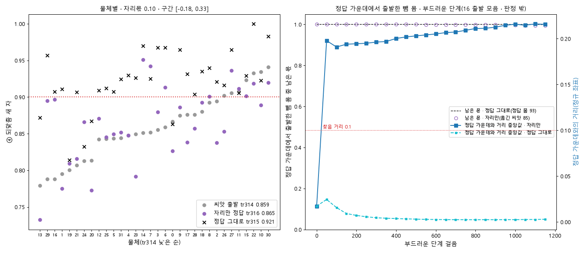

실험 m2_tr0316_h069_자리만
목표 G1.2 view 모음 → 파츠별 CAD code(CadQuery · 그 전 「3 면도 → 파츠별 CAD」 · 지금 M2 는 위 · 앞 · 옆 고정 세 장만 받음 → 아무 각도 N 장으로 바꿀 것 · 11-20) · G1 첫 제품 — 피규어 · 메카 사진 여러 장 + 치수 → 숨은선 3 면도 + 파츠별 CAD · G0 임의의 이미지 → CAD 코드 · 빌린 가정 5: 정사영 · 시점앎 · 흰바탕 · 렌더화풍 · 정답3D · 갚는 계획: 진단 · 정답 만들기 — 껍데기를 그릴 어휘가 정해지면 그 어휘로 CAD code 정답 변환(m2 학습 · 비교는 그 뒤 카드) · 목표 시험지 값: 안 잼 (!)
tr315 의 ④ 오름(0.8588 → 0.9214)은 주로 뺌 몸의 자리 덕인가 — 지금 씨앗의 가운데만 정답으로 옮기면 그 오름의 몇 할을 되찾나?
| 가설 | 주장 | 결과 | 근거 |
|---|---|---|---|
| m2-H69 | tr315 오름은 주로 뺌 몸 자리 덕이다 — 지금 씨앗의 가운데만 정답으로 옮기면 tr315 오름의 70 % 이상을 되찾는다 | 기각 | S6 합성 정답 32 · 뺌 씨앗 가운데만 정답 ④ 되맞춤 새 자 평균 0.8648(tr314 0.8588 · tr315 0.9214) · 자리몫 0.0972(≤ 0.3 → 기각) · 자리몫 구간 [−0.1794, 0.3334](위끝이 0.3 을 조금 넘음) · 넷차 +0.0061 구간 [−0.0100, 0.0226] · 오름 19 · 내림 13 · 0.9 넘은 물체 9/32(tr314 7 · 새로 넘음 6 · 7 · 8 · 14 · 떨어짐 10 · 26) · 가장 큰 오름 16 +0.1083 · 29 +0.1067 · 14 +0.0998 · 가장 큰 내림 23 −0.0579 · 2 −0.0569 · 최소 0.7325(물체 13) · tr315 보다 높은 물체 3 · 뺌 찾음 34/93(tr314 28 · tr315 74) · 남은 뺌 몸 평균 2.59 · 하네스 실패 0 · CAD 안 끝남 0 · 조용한 실패 1(물체 1 · 식 대 메시 점 IoU 0.944 < 0.95 · 점수는 셈에 넣음) · 판 폴더 0.04 GB · 판정 밖 자취: 정답 가운데로 옮긴 씨앗 85 개 중 켜진 몫 끝 0.996 · 출발 자리에서 떨어진 거리 중앙값 50 걸음 0.19 · 끝 0.208(tr315 정답 그대로 0.018) — 넷.json 세 판 물체별 · 자취 json 에서 셈 |
결정 표(돌리기 전에 정함)
- 만약 지지
다음 자리가 주된 원인 — 정답 없이 뺌 몸 자리 찾기 개선 카드(씨앗 나누기 · 출발마다 다른 씨앗) - 만약 기각
다음 자리 말고 종 · 크기 · 처음 상태 — 그쪽 성분 판(종 · 크기만 정답) - 만약 약함
다음 섞임 — 숫자 그대로 적고 사용자와 고름
분석
한 줄로
물음: tr315 에서 뺌 몸을 정답 그대로 출발시키자 관문 ④ 가 0.8588 → 0.9214 로 올랐다. 그 오름은 주로 뺌 몸의 자리 덕인가?
답: 자리만으로는 오름이 거의 안 나온다. 지금 씨앗의 가운데만 정답 자리로 옮기고 나머지는 그대로 두자 평균은 0.8648 이었다. tr315 오름의 10 %(자리몫 0.10 · 95 % 구간 [−0.18, 0.33])만 되찾았다. 지지 선 0.7 은 구간 밖이라 확실히 아니고, 기각 선 0.3 은 구간 위끝이 살짝 넘는다. 판정 규칙(점 값 ≤ 0.3)대로 m2-H69 기각. 자리가 필요 없다는 뜻은 아니다. 자리가 맞아도 다른 성분(크기 · 종류 · 축 · 몸 수)이 없으면 오르지 않는다는 뜻이다.
왜 이 실험을 했나
tr315 는 뺌 몸의 자리 · 크기 · 종류 · 축 · 몸 수를 한꺼번에 정답으로 줬다. 그래서 무엇 덕에 올랐는지 몰랐다. 입력만 쓰는 씨앗 셋을 재 보니, 출발 때 정답 뺌 몸 0.1 안에 드는 수가 9 · 4 · 16 / 93 로 모두 낮았다. 자리 찾기에 힘을 쓸지 정하려고, 자리 하나만 정답으로 주는 판을 사용자가 골랐다. 목표는 임의의 메시를 CAD code 정답으로 바꾸는 변환이다.
낱말 몇 개: ④ 는 본 판 전에 거치는 관문으로, 뺌 어휘로 직접 만든 합성 정답 32 개를 같은 맞춤이 되찾는지 본다. 뺌 몸 은 더한 몸에서 파내는 몸이다. 씨앗 은 입력에서 파인 곳을 찾아 뺌 몸을 처음 놓는 자리다(지금은 파인 점을 k-평균으로 넷으로 나눔). 자리몫 은 이 판이 tr314 에서 tr315 까지의 오름 중 몇 할을 되찾았는지다. 부드러운 단계 는 맞춤의 앞 1,200 걸음(종류 · 켜짐을 부드럽게 맞추는 단계)이다. 있 · 뺌 0.5 넘음 은 그 몸이 켜져 있고 빼는 몸으로 쓰이는 상태다. 판정 밖 은 미리 정한 판정에 쓰지 않은 곁 측정이다.
바꾼 것 하나
지금 씨앗 넷과 정답 뺌 몸 가운데를 거리로 짝지은 뒤, 짝 지은 씨앗의 가운데만 정답 가운데로 옮겼다. 크기 · 축 · 종류 · 몸 수(넷)는 지금 씨앗 그대로다. 정답에서 읽은 것은 가운데뿐이다. 정답 뺌 몸 93 개 중 85 개의 가운데를 받았다(정답 뺌이 넷보다 많은 물체 넷에서 8 개는 못 받음). 나머지는 tr314 와 같다.
결과

왼쪽에서 보라(자리만 정답)가 회색(씨앗 출발) 근처에 흩어져 있고 검은 ×(정답 그대로) 까지 못 올라간 것을 보자. 물체별로는 ±0.1 까지 흩어진다. 오른쪽은 정답 가운데에서 출발한 뺌 몸(이 판은 옮긴 씨앗 85 개, tr315 는 정답 몸 93 개 · 16 출발 모음)이 부드러운 단계 동안 켜진 채 남은 몫과 정답 가운데와의 거리 중앙값이다(판정 밖). 빨간 점선은 찾음 거리 0.1 이다.
| 자리만 정답(이 실험) | 씨앗 출발(tr314) | 정답 그대로(tr315) | |
|---|---|---|---|
| 되맞춤 새 자 평균 | 0.8648 | 0.8588 | 0.9214 |
| 자리몫(지지 ≥ 0.7 · 기각 ≤ 0.3) | 0.10 | 0 | 1 |
| 0.9 넘은 물체 | 9/32 | 7/32 | 27/32 |
| 뺌 자리 찾음 | 34/93 | 28/93 | 74/93 |
| 하네스 실패 | 0 | 0 | 0 |
새 자는 정답 메시와 맞춘 메시의 표면 점이 서로 0.02 안에 드는 정도를 F 점수(0 ~ 1)로 잰 값이다.
왜 이렇게 나왔나
확인한 것
- 자리몫은 0.0972, 짝 부트스트랩 95 % 구간은 [−0.18, 0.33] 이다. 구간 위끝이 기각 선 0.3 을 조금 넘는다. 이 구간은 물체 사이 흔들림만 담는다(한 번만 돌림). 판 사이 흔들림은 짐작으로 자리몫 ≈ 0.1 이다(카드 섞임 칸 · 잰 값 아님).
- tr314 대비 짝 차는 +0.0061 [−0.0100, 0.0226] 로 구간이 0 을 품는다. 오른 물체 19 · 내린 물체 13 이다. 0.9 를 새로 넘은 물체가 넷(6 · 7 · 8 · 14), 떨어진 물체가 둘(10 · 26)이다. 이 판은 평균으로는 tr314 와 구분되지 않는다.
- 자취(옮긴 씨앗 85 개 × 16 출발 모음 · 50 걸음마다): 「있 · 뺌 둘 다 0.5 넘음」인 몫은 부드러운 단계 끝(1,150 걸음 기록)에 0.996 이다. 그런데 정답 가운데와의 거리 중앙값은 첫 50 걸음에 0.2 가까이로 뛰고, 부드러운 단계 끝에 0.216 이다. 찾음 거리 0.1 을 넘는다. tr315 의 정답 그대로 출발한 뺌 몸은 같은 거리가 끝에 0.003 이었다. 그 뒤 150 걸음(딱 단계)은 자취에 없다.
- 끝 결과로도 같다: 85 개의 가운데를 정답으로 줬지만, 끝에 제자리를 찾은 뺌 몸은 34/93 이다(tr314 28).
짐작 (아직 확인 안 함)
- 크기 · 종류가 틀린 뺌 몸을 정답 자리에 두면 더한 몸을 잘못 파내서 loss 가 커지고, 맞춤이 그 뺌 몸을 정답 자리 밖으로 밀어내는 것으로 보인다.
- 그렇다면 tr315 오름은 자리와 다른 성분(크기 · 종류 · 축 · 몸 수)이 함께 맞아서 나왔을 수 있다. 성분끼리 서로 기대면 「자리몫 + 꼴몫」 을 더해도 오름을 깔끔히 나눌 수 없다.
- 크기 · 종류만 정답으로 주는 판은 아직 돌리지 않았다. 「꼴이 필요한가」는 다음 판이 답한다.
한계
- 정답에서 가운데를 빌린 진단이다. 실제 물체에 그대로 쓸 수 없다.
- 섞임: 정답 가운데 85/93 만 옮겼다. 어느 씨앗을 옮길지 고르는 데 정답을 썼다. 몸 수는 tr314 와 같은 넷이고 tr315 와 다르다.
- 한 번만 돌렸다. 대조 tr314 를 지금 코드로 다시 돌리지 않아 판 사이 흔들림 바닥을 재지 않았다. 자리몫 구간 위끝(0.33)이 기각 선에 걸친다.
- 조용한 실패 1 개(물체 1 · 맞춘 식과 실행 메시의 점 겹침 0.944 < 0.95)가 있다. 점수는 셈에 넣었다.
- 판이 도는 동안 다른 프로그램(ollama)이 GPU 하나를 같이 써서 98 분 걸렸다. 결과에는 영향이 없을 것으로 본다(같은 씨 · 같은 코드 · 확인은 안 함).
배운 것과 다음
뺌 몸 자리 하나만 정답으로 줘서는 ④ 가 거의 안 오른다. 정답 자리에 둔 뺌 몸도 꼴이 틀리면 곧 밀려난다. 꼴이 필요한지는 다음 판이 답한다.
- 다음은 사용자가 고른 성분 판 둘이다(감시 세션 전달): tr317 종 · 축만 정답, tr318 크기만 정답. 둘 다 나머지는 지금 씨앗 그대로다.
- 성분끼리 기대는지 보려면 「꼴 + 몸 수」 를 함께 주는 판도 후보로 둔다.
- 바탕은 B2 코드 그대로 둔다.
검토 (11-26 맥락 없는 서브 에이전트 · 카드 · 잼 · 넷 세 개 · 보고 · 결과_pc.png · 그림316.py 만 봄)
- 숫자 · 판정: 평균 셋 · 0.9 넘은 수 · 오름 내림 · 새로 넘음 · 떨어짐 · 최소 · 찾음 수 · 자리몫 0.0972 모두 맞음 · 다른 난수 부트스트랩 −0.17, 0.32 · 규칙대로 기각.
- 답 「아니다」 과장: 잰 것은 「씨앗 꼴 그대로 자리만 맞으면 충분한가」 → 「자리만으로는 거의 안 오름 · 자리가 필요 없다는 뜻 아님」 으로.
- 답 · 표에 구간 없음 · 판 사이 흔들림 짐작(≈ 0.1) 빠짐 · 짝 차 구간이 0 을 품고 19/13 도 흔들림 안 → 「tr314 와 구분 안 됨」 밝힘.
- 자취 「85 개 중」 은 85 × 16 출발 모음 · 「끝」 은 부드러운 단계 끝 · 거리는 출발에서가 아니라 정답 가운데와로 직접 재야 하고 몸 칸 짝을 assert 해야 함 · 끝 34/93 을 직접 증거로.
- 그림: 본 몸 수가 판마다 다름(85 대 93) · 중앙값 · 겹친 보라 선 · 찾음 선 없음 · 캡션 「점수는 씨앗 출발 근처」 는 물체별로 ±0.1 흩어짐 → 「평균은」.
- 굵은 문장 뒤 절반 「함께 맞아야」 는 안 잼 · 몸 수 빠짐 · 성분이 서로 기대면 몫을 더해 나눌 수 없음 · 「결과에 영향 없다」 는 확인 안 한 말 · 부드러운 단계 · 판정 밖 · 있 뺌 0.5 풀이 없음.
고친 줄 (검토 반영)
- 한 줄로 답(구간 · 기각 선 걸침 · 「필요 없다는 뜻 아님」) · 낱말 풀이 셋 더함 · 캡션 · 오른쪽 그림 설명 · 확인한 것(흔들림 짐작 · 구분 안 됨 · 자취 85 × 16 · 정답 가운데와 거리 0.216 대 0.003 · 끝 34/93) · 짐작 셋 · 한계 ollama 문장 · 굵은 문장과 다음.
- 그림316.py: 정답 가운데와 거리를 직접 재고 첫 기록 0.03 안 assert(몸 칸 짝 확인) · 찾음 선 0.1 · 보라 남은 몫을 빈 동그라미로 · 범례에 몸 수 · 제목 「16 출발 모음」 → 결과_pc · 폰 다시 그림.